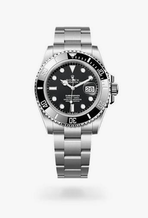

Rolex
Rolex Submariner
- Año de creación
- 1953
- Precio de referencia
- Alrededor de 10,000 USD
Historia
Presentado en 1953, el Submariner fue el primer reloj de buceo con clasificación de estanqueidad de 100 metros producido en serie. Rolex lo diseñó para buzos profesionales y aficionados, y desde entonces se ha convertido en el modelo de referencia del segmento. Su bisel giratorio unidireccional, que hoy es de cerámica, sigue siendo uno de los rasgos más reconocibles de la relojería deportiva.
Características
- Caja Oyster de acero 904L, estanca hasta 300 metros
- Bisel giratorio unidireccional de cerámica Cerachrom
- Movimiento automático de manufactura con certificación cronométrica
- Cristal de zafiro y corona Triplock de rosca